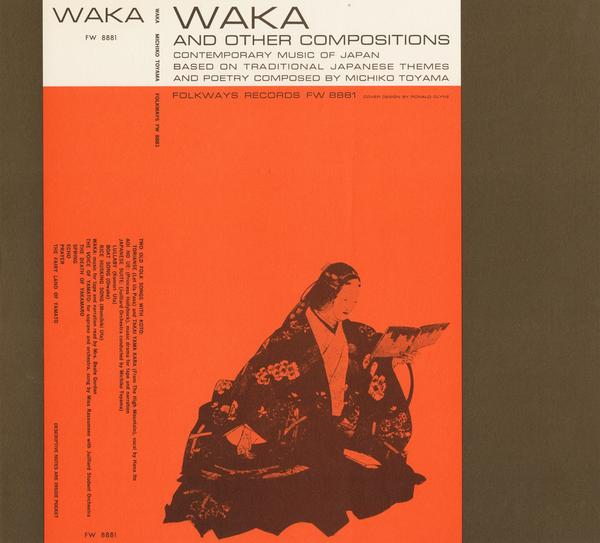

Born in Osaka, educated in Paris, celebrated in New York — she broke every barrier placed before her, and when she faced a challenge, she found a way.

A landmark recording rooted in ancient Japanese waka poetry and folk tradition, reimagined through Michiko Toyama's singular compositional voice — shaped equally by Boulanger's Paris, Messiaen's harmonics, and the textures of her homeland.
Over nearly two decades, she developed increasingly sophisticated acoustic models of the Shakuhachi — from spectral analysis of wet and dry bamboo tone, to ARMA synthesis models, to pole-zero modelling. A composer who became a scientist without ever ceasing to be a musician.